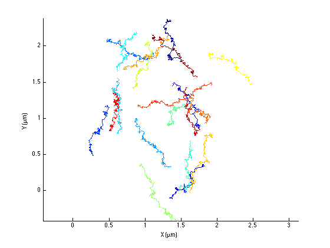
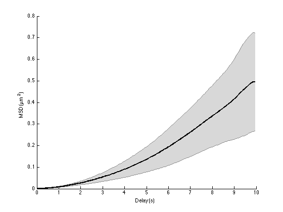
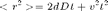
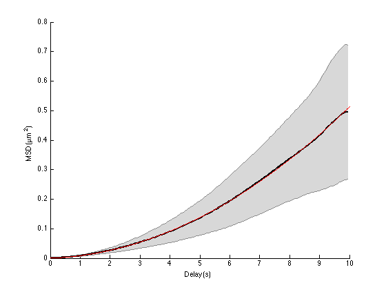
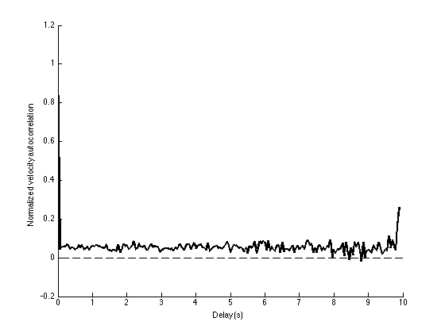

Directed motion.
Contents
MSD analysis can also be used to discriminate between several movement type. For instance, suppose that you are studying a protein in a cell. You would like to know whether it is actively transported, e.g. by vesicles or molecular motors, or if it is unbound and free to diffuse. Candidate functions for the protein completely differ according to the found motion.
We will simulate here the motion of particles that are actively transported. That is: on top of the Brownian, random movement, they have an extra displacement correlated over long time. This is meant to simulate transport. The direction and mean speed of this movement will vary for each particle. Also for each particle, the instantaneous velocity and its direction will fluctuate because of Brownian motion. We will then try to derive back the ensemble mean velocity of the set of particles.
close all clear all
Simulation parameters.
SPACE_UNITS = 'µm'; TIME_UNITS = 's'; N_PARTICLES = 20; N_TIME_STEPS = 200; % Diffusion coefficient. Will set the amplitude of the random displacement D = 1e-3; % µm^2/s % Time step between acquisition; fast acquisition! dT = 0.05; % s, % Mean velocity vm = 0.05; % µm/s % Area size, just used to disperse particles in 2D. Has no impact on % analysis. SIZE = 2; % µm
Trajectories generation.
tracks = cell(N_PARTICLES, 1); k = sqrt(2 * D * dT); for i = 1 : N_PARTICLES % Time time = (0 : N_TIME_STEPS-1)' * dT; % Velocity orientation theta = 2 * pi * rand; % Mean velocity v = vm * (1 + 1/4*randn); % Initial position X0 = SIZE .* rand(1, 2); % Instantaneous displacement: dX_brownian = k * randn(N_TIME_STEPS, 2); dX_directed = v * dT * ... [ cos(theta)*ones(N_TIME_STEPS,1) sin(theta)*ones(N_TIME_STEPS,1) ]; % Integrate uncorrelated displacement dX = dX_brownian + dX_directed; dX(1, :) = X0; X = cumsum(dX, 1); % Store tracks{i} = [time X]; end clear i X dX time X0
MSD analysis.
Let's see how the simulated trajectories look like:
ma = msdanalyzer(2, SPACE_UNITS, TIME_UNITS); ma = ma.addAll(tracks); ma.plotTracks ma.labelPlotTracks
The transported behavior is rather obvious, even on this short time. Here is what the average MSD curve look like:
ma = ma.computeMSD; figure ma.plotMeanMSD(gca, true);
Computing MSD of 20 tracks... Done.
Obviously, the MSD curve does not look like a straight line anymore. It has a clear positive curvature, indicating that the excursion of the particle at long times exceed what it should be if it was purely diffusive.
Its analytical expression is detailed in Saxton paper [3]:

so we should expect to see a parabola, with the directed motion behavior dominating for large delays. A fit of the average MSD curve by a polynomial msd = a x t + c x t² should therefore yield both the diffusion coefficient and the flow velocity. There is not automated method to do it in @msdanalyzer; we'll have to do it "by hand":
A = ma.getMeanMSD; t = A(:, 1); % delay vector msd = A(:,2); % msd std_msd = A(:,3); % we will use inverse of the std as weights for the fit std_msd(1) = std_msd(2); % avoid infinity weight ft = fittype('a*x + c*x^2'); [fo, gof] = fit(t, msd, ft, 'Weights', 1./std_msd, 'StartPoint', [0 0]); hold on plot(fo) legend off ma.labelPlotMSD Dfit = fo.a / 4; Vfit = sqrt(fo.c); ci = confint(fo); Dci = ci(:,1) / 4; Vci = sqrt(ci(:,2)); fprintf('Parabolic fit of the average MSD curve with 95%% confidence interval:\n') fprintf('D = %.3g [ %.3g - %.3g ] %s, real value was %.3g %s\n', ... Dfit, Dci(1), Dci(2), [SPACE_UNITS '²/' TIME_UNITS], D, [SPACE_UNITS '²/' TIME_UNITS]); fprintf('V = %.3g [ %.3g - %.3g ] %s, real value was %.3g %s\n', ... Vfit, Vci(1), Vci(2), [SPACE_UNITS '/' TIME_UNITS], vm, [SPACE_UNITS '/' TIME_UNITS]);
Parabolic fit of the average MSD curve with 95% confidence interval: D = 0.000968 [ 0.00095 - 0.000986 ] µm²/s, real value was 0.001 µm²/s V = 0.0688 [ 0.0687 - 0.0689 ] µm/s, real value was 0.05 µm/s
So the numerical estimates are reasonably good, regarding the low number of particles we have. For actual experiments, the situation might be less ideal. For large delays, the uncertainty might be so high that it will alter the values deduced from the fit. You might then want to limit the fit to only a portion of the average MSD curve, like we did before. But then, we have now a fit with two free variables (D and v), so it requires more data points to be robust. And anyway, if you want to have a good confidence on the transport mechanism, you want to sample the movement over long time.
As if these considerations were not enough, there is localization error that will change the fit function. As discussed later in this tutorial, such errors induce an offset of the average MSD curve, that you need to take into account in the fit. This adds another free variable, compromising the robustness of the fit even more.
Velocity auto-correlation.
Another way to discard the possibility a purely Brownian motion is to check the velocity auto-correlation:
ma = ma.computeVCorr; figure ma.plotMeanVCorr
Computing velocity autocorrelation of 20 tracks... Done.
Note that the auto-correlation seems to be above 0. This shows that on average, a displacement has more chance to be in the same direction over time.
Qian et al. [2] (equations 10 & 11) mention that one could derive the direction motion velocity out the velocity analysis. However it fails in our case since each particle have a different motion vector: Their directed motion have the same mean speed, but not the same direction. So far, the fit of the MSD curve is the only way to derive the direction motion speed.